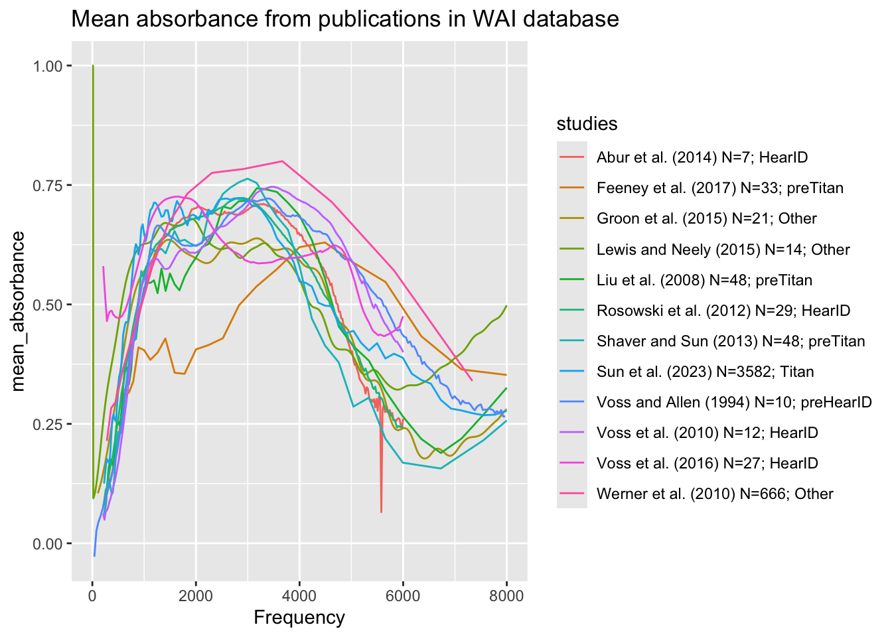
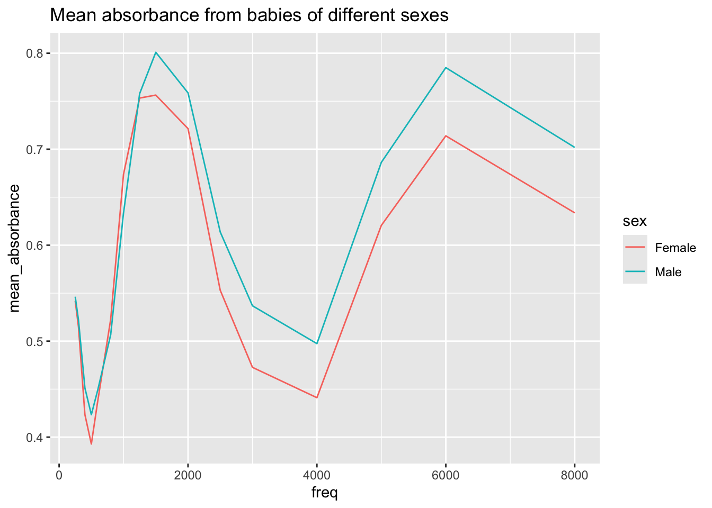

library(RMariaDB)
library(dbplyr)
library(dplyr)
library(tidyverse)Wideband Acoustic Immittance Data Visualization
Analysis
I plan to query data from the Wideband Acoustic Immittance Database, which is a repository of auditory measurements from different people. From this data, two graphs will be generated. One graph will replicate Figure 1 from Voss(2019) and the other will compare mean absorbance measurements between babies of different sexes over different frequencies using data from Aithal et al.(2013).
This is the abstract of Aithal et al.(2013):
Presently, normative wideband reflectance data are available for neonates who have passed a distortion product otoacoustic emission test. However, passing the distortion product otoacoustic emission test alone does not ensure normal middle ear function. The objective of this study was to establish normative wideband reflectance data in healthy neonates with normal middle ear function, as justified by passing a battery of tests.
Voss(2019) is a summarization of different studies analyzing auditory measurements among people.
con_wai <- dbConnect(
MariaDB(), host = "scidb.smith.edu",
user = "waiuser", password = "smith_waiDB",
dbname = "wai"
)
Measurements <- tbl(con_wai, "Measurements")
PI_Info <- tbl(con_wai, "PI_Info")
Subjects <- tbl(con_wai, "Subjects")
#collect(Measurements)SELECT Measurements.Identifier,
Measurements.Frequency,
AVG(Absorbance) AS mean_absorbance,
CONCAT(PI_Info.AuthorsShortList," (", PI_Info.Year, ")"," N=", COUNT(DISTINCT Measurements.SubjectNumber) ,"; ",Measurements.Instrument) AS studies
FROM Measurements
JOIN PI_Info ON Measurements.Identifier = PI_Info.Identifier
WHERE PI_Info.AuthorsShortList IN ("Abur et al.", "Feeney et al.", "Groon et al.", "Lewis and Neely", "Liu et al.", "Rosowski et al.", "Shahnaz et al.", "Shaver and Sun", "Sun et al.", "Voss and Allen", "Voss et al.", "Werner et al.") AND Measurements.Frequency BETWEEN 0 and 8000
GROUP BY Measurements.Identifier, Measurements.Frequency, Measurements.Instrument;table1 %>%
ggplot(aes(x = Frequency, y = mean_absorbance)) +
geom_line(aes(color = studies), se = FALSE) +
labs(
title = "Mean absorbance from publications in WAI database"
)
SELECT
Subjects.Sex AS sex,
Subjects.Race AS race,
Subjects.Ethnicity AS ethnicity,
Subjects.Identifier,
Measurements.Frequency AS freq,
AVG(Measurements.Absorbance) AS mean_absorbance
FROM Subjects
JOIN Measurements ON Subjects.SubjectNumber = Measurements.SubjectNumber
WHERE Subjects.Identifier = "Aithal_2013" AND Measurements.Identifier = "Aithal_2013"
GROUP BY ethnicity, race, sex, freq;table2 %>%
ggplot(aes(x = freq, y = mean_absorbance, color = sex)) +
geom_line(se = FALSE) +
labs(
title = "Mean absorbance from babies of different sexes"
)
Using SQL queries, I filtered through and sorted data in a manner that allowed me to compare absorbance measurements across babies of different sexes with data from Aithal(2013)and copy figure 1 of Voss(2019). I did this with 2 SQL queries and joined different tables from the same database to produce both graphs. Following each query, I used ggplot to plot mean absorbance measurements alongside frequency.
References
Aithal et al. 2013. “Normative wideband reflectance measures in healthy neonates.” International Journal of Pediatric Otorhinolaryngology 77 (1). https://doi.org/10.1016/j.ijporl.2012.09.02
Voss, SE. 2019. “Resource Review.” Ear and Hearing 40 (6). https://doi.org/10.1097/AUD.0000000000000790.